在冬季，每天都应该吃一点红薯，如果您家里有小孩子，更要每天坚持给他吃红薯。
现在大家都知道红薯是健康食品，但对它的重视程度，我觉得还是不够，并没有把它列为每天要吃的必需品。比如，很多女孩子觉得水果是一天中不可缺少的，认为可以美容养颜；很多家长也觉得孩子必须每天吃水果。其实，水果是一个补充，并不见得每天非要吃。如果您每天一定要给孩子吃一样健康食物，那么在冬季，这个健康食物就是红薯。
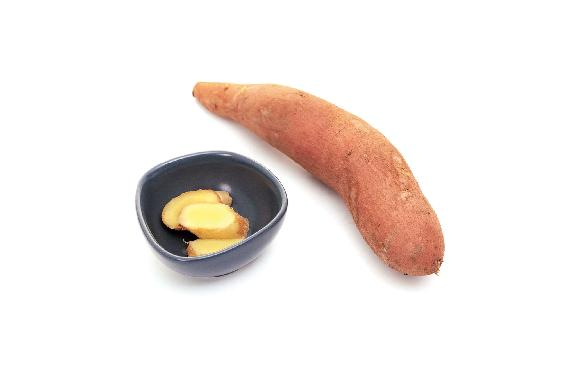
不管您是否喜欢吃红薯，我都建议您仔细阅读一下本节内容，因为哪怕是平时不怎么吃红薯的朋友，您的身体状况也可能跟红薯息息相关。红薯是公认的健康食品，有关它的科普文章也特别多，但是很多人不求甚解。一个错误的知识，一百个人都去抄，最后就变成一个公认的“常识”。
红薯是平常之物，人人都熟悉它，却也容易忽略它、误解它，从而产生一些对它的错误认识，变成最熟悉的陌生食物，使它的好处淹没在各种错误的知识中间，反而不被大家所熟知了。
很多科普文章，甚至很多人在写专业论文的时候，当叙述到红薯时，都喜欢引用《本草纲目》中的一句话——“海中之人多寿，亦由不食五谷，而食甘藷故也”——来证明红薯的功效。这句话是什么意思呢？翻译成大白话就是说，海上的人很长寿，是由于他们平时不吃五谷等粮食，而经常吃甘薯。
这里的“海中之人”，指的是在海南岛上生活的人。很多人把这句话作为红薯功效的一个强有力的证明，实际上这里的甘薯并非现在的红薯。《本草纲目》上记载的这段话是李时珍从《南方草木状》中引用的。《南方草木状》也很有名，它成书于晋代，可是在晋代的时候，中原地区还没有红薯呢。
《南方草木状》里所说的甘薯，其实是一种类似于山药的植物。后来人们所说的甘薯，才是现在的红薯。
其实，红薯也是一个区域性的名字，华北地区的人一般喜欢叫红薯；东北地区的人习惯叫地瓜；西南地区的人喜欢叫红苕；而东南沿海地区，如浙江、福建、广东，一般把它叫作番薯；但在北京，人们喜欢叫它白薯；在上海，人们则叫它山芋。现在红薯的正式名称，就是番薯（《中国植物志》把番薯这个名字，作为了红薯的正名）。
为什么红薯的正式名称是番薯？因为它是从国外引进的，不是中国原生的品种。其实，凡是从国外引进的东西，在命名的时候，古人都会加一个“番”或者“胡”字，如番茄、胡萝卜等，红薯得自外国，故曰番薯。
红薯传入中国的时间非常晚，是在明代末期。所以在明末之前，中国是没有红薯的。如果您在之前的古书中读到了红薯这个名称，比如，北宋的苏轼写的诗里头提到过红薯，还有《南方草木状》里记载的甘薯，都不是现在所吃的红薯，而是另外的植物。
虽然红薯很晚才传入中国，但它对中国的影响却非常大，可以说红薯的传入，改变了中国的历史。就拿福建省来说，明朝开国之初，福建全省有将近392万人。到了万历年间，过了200多年以后，福建全省人口不仅没有增加，反而减少了很多，只剩下近174万人，不到原来的一半。主要原因就是连年的灾荒，很多人没有饭吃，饿死了。
又过了200多年，到了清道光十四年的时候，福建省的人口猛增到1500多万人，也就是说，比200年以前增长了将近10倍。其实，后面这200年间，福建省依然灾荒不断，但人口为什么能如此迅速地增长呢？这里面一个非常重要的原因就是引进了红薯，并且人们大量地食用红薯。
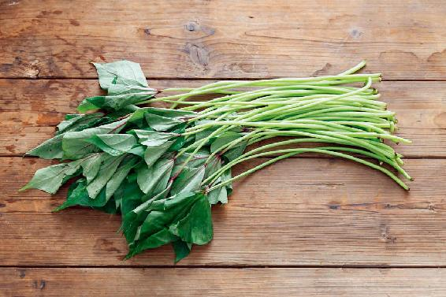
红薯起源于南美洲。哥伦布发现了新大陆，也发现了红薯，他把红薯带回欧洲，献给了西班牙女王。西班牙的水手又把红薯带到了现在的菲律宾和越南。红薯从这两个国家，分三条路线传入中国。
明万历十年（1582年），广东商人陈益从越南把红薯引种到了现在的广东东莞。这个年份非常值得纪念，因为自此以后，红薯就提高了中国的粮食产量，改变了中国农作物的分布和结构，最重要的是它改变了中国人的饮食结构。
到今天为止，红薯传入中国已经有438年，有十几二十代的人，都享受到了它的恩泽。我们今天能够把红薯这种健康有益的食物当成家常便饭来吃，回望过去，我们真的要感谢两个人：一个叫陈振龙，另一个人叫徐光启。
陈振龙是福建人，他在菲律宾做生意的时候，看到西班牙人在当地推广种植红薯，产量很高。他想到家乡福建山多田少，而且土地很贫瘠，粮食产量不高，就想把红薯引种到中国。那时候，西班牙人不允许红薯出境，陈振龙就把红薯藤编到汲水的绳子里面，并在绳子表面抹上污泥，就这样躲过了西班牙人的出境检查，然后在海上航行了7天，到了福建的厦门。这是在明万历二十一年（1593年），也就是陈益引进红薯的11年之后。
陈振龙不是第一个把红薯引进中国的人，但是他和他的子孙后代，对于红薯在国内的传播，真的做出了巨大的贡献。他们首先在福建传播，之后，陈振龙的四世孙和五世孙，只要到哪里去做生意，就把红薯传播到哪里，先是传播到了浙江，然后又传播到了河南、河北、山东，甚至整个华北地区。这是一件很了不得的事，因为红薯原本是在南美洲的热带地区生长，没想到经过中国人的努力，能够在华北这些温带地区生长。
其间，他们也经历了困难、挫折，后来才逐渐地学会了留种、在冬天储藏等方法。这也是中国人对于红薯种植的一个很大的贡献。
徐光启则为了大规模推广种植红薯，还专门写了一篇《甘薯疏》，系统地总结了试种红薯的经验和教训，书中介绍了食用红薯的好处和十余种储藏红薯的具体方法。
现在，不管是在南方还是在北方，我们都可以吃到本地种的红薯，这真的是要感谢那些积极引进、传播红薯的先行者。
回顾红薯传入中国的历史，以及它由一种热带的农作物，变成了从热带、亚热带到温带都可以种植的农作物这样一个过程，不仅是为了饮水思源，感谢前辈的付出，更重要的一点是，希望大家能够了解红薯的适应性到底有多强，以及这种良好的适应性带来的补益效果。
前面说过，红薯并不是中国原产的作物，而是到明代晚期才传入中国的，虽然在外来物种里面，它传入的时间算是非常晚的了，但它传播的速度却非常惊人，传播的范围也特别广。这是因为红薯的适应性很强。
而红薯这种非常强的适应性，对于人体有哪些帮助呢？可以这样说，凡是生命力特别顽强的作物，对人体往往也有特别的补益作用，红薯就是这样一种作物。
红薯原本是南美洲的农作物，引种到同是热带地区的东南亚（菲律宾）没有问题，引种到我国的广东、福建也没有问题，引种到属于温带地区的华北地区竟然也没有问题。
从热带到温带，红薯都可以生长，这种适应性真的非常强。不管在什么样的土壤中，它都能成活，广东、福建的红土地可以，华北地区的黄土地也可以。不管是在山坡、丘陵还是平地栽种，它都能生长，而且产量还特别高。
当时的土地被分为上、中、下三等，一亩良田能产500斤粮食，但如果这一亩土地用来种红薯，则能产1万斤，20倍的差距。
陈振龙把红薯引进到福建的第二年，福建遭遇大旱，颗粒无收，饥民遍野。当时的福建巡抚金学曾马上让各县大面积种植红薯，才过了几个月，红薯就大丰收了，然后饥民都可以吃饱饭了。从此以后，福建省再遇到荒年，就不会大批地饿死人了。
之后的200年，福建的人口数量增长了9倍以上，红薯功不可没。当时实际增长的人数，应该远远超过注册的数字。因为在200年间，有大批的移民涌入内地，这就是历史上著名的移民事件——“湖广填四川”。实际上，不仅是湖南、湖北、广东地区，全国十多个省份的人都涌入了四川，而广东、福建人在移民到四川的过程中，也把红薯带了过去。
1733年，红薯传到了四川；2年之后，传到了云南；19年之后，传到了贵州。从此以后，我国从东到西，从南到北，红薯被广泛种植。到现在，中国红薯的种植面积和产量已经居世界第一。
读者评论：没想到红薯有这么多的作用
逍遥梦LanLan：小时候天天吃红薯，工作后就很少吃了。没想到红薯有这么多作用，又长知识了。
mia 米亚：从小就喜欢吃红薯，每年外婆都会种很多红薯。我经常把红薯埋进炭火堆里，这样烤出来的红薯超级香，红薯肉沙沙的，超好吃。
1.吃红薯，能增强人体吸收营养的能力，增强脾胃功能
从南到北，从东到西，红薯被广泛种植，这说明红薯这种农作物的适应性非常强，它非常善于吸收土壤中的营养，哪怕在特别贫瘠的土地上，它都可以吸收到足够的营养，使其能够高产。
基于红薯的高强适应性，如果我们多吃红薯，也能增强人体吸收营养的能力，增强脾胃的功能。所以我们最好是每天都吃一点红薯，特别是小孩子，更建议您给他多吃红薯。虽然红薯是杂粮，但是小孩子吃红薯，他的身体会长得更棒，对营养的吸收也会更好。
2.红薯生吃、熟吃的不同功效
在前面，我提到过红薯在传入、传播的过程中，应该特别感谢两位古人。一位是把红薯从菲律宾引进到福建，并且推广到全国的陈振龙；另一位是明代非常杰出的科学家徐光启，他写的《甘薯疏》系统总结了红薯的栽种技术。
其中，徐光启总结了红薯的种植技术，并以此写了一本书——《甘薯疏》。《甘薯疏》是我国第一部专门讲红薯的书。在书中，徐光启总结了红薯的十三胜，也就是红薯的十三大优势。比如，除了讲红薯的高产、便于繁殖、不怕杂草、不怕蝗虫等，还讲了它的功效。
其中一点是，红薯的保健功效跟山药类似，可以健脾胃、补益人体，还没有山药那么滋腻，适合多吃。另外，红薯还可以生吃，徐光启觉得这一点特别好。
其实，红薯生吃和熟吃，会有不同的功效，这是他当时没有写出来的。
生的红薯可以祛血毒，熟的红薯可以补血，而且生红薯还可以外用。
3.主食结构是不能轻易改变的，否则身体就会出问题
在中国的大地上，红薯被遍地栽种，它物美价廉，产量又高。在很多地方，灾年时人们一日三餐都把它当成主食来吃。
现在我们一说起主食，就认为南方人吃米饭，北方人吃面食。这两样主食，我们一天也离不了，一顿不吃好像都不行。但我们渐渐忘记了，在之前的400年间，很多人家里的餐桌上，是不可能每天都看得见米饭和面食的，红薯反而是主食，是一日三餐要吃的主食。
我说这些不是在忆苦思甜，而是想让您知道一条非常重要的饮食原则——人的脾胃得于父母、祖父母的遗传，我们的祖祖辈辈、世世代代在吃什么样的食物，我们的脾胃就适应什么样的食物，也需要这些食物。
现在为什么患高血压、高血脂、高血糖的人那么多？亚健康的人那么多？为什么医学界把一些慢性病称为富贵病？就是因为我们现在吃的一些食物，跟我们祖辈吃的食物有非常大的不同。当然，这一点是跟现代文明的变化、进步有关系的。
所以，我一直在呼吁和提倡这样一条饮食原则——每天的餐桌上，一定要有我们祖辈所吃的那些食物，这些食物对我们的脾胃来说，是相对安全的。
经过了400年以红薯为主食的日子，我们的脾胃对于红薯可以说是完全地适应了，而且特别需要它，特别是在红薯被大量种植的地区。由于遗传的关系，这些地方的人的脾胃对于红薯更加需要，所以如果您的家乡盛产红薯，那您就要更多地吃红薯。
过去的人是为了生存把红薯当主食来吃，现在的人为了健康，也可以把红薯当主食来吃。
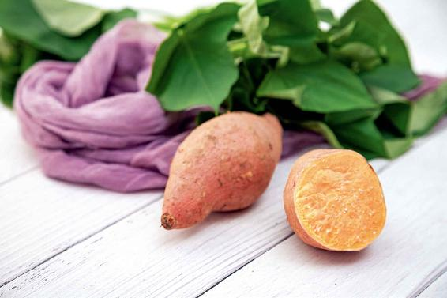
如果在日常的饮食中，红薯吃得不够，脾胃就会觉得不太适应。这就像习惯吃面食的北方人迁到南方居住，每天吃大米觉得不舒服是一个道理。反过来也一样，习惯于吃大米的南方人迁移到北方居住，如果天天吃面食，一年下来，有的人身体就会急剧发胖。
主食结构是不能轻易改变的，否则我们的身体就会适应不了。
在过去的400年间，凡是种植红薯的土地上，大部分的人都曾经以红薯为主食，所以脾胃对于红薯有特别的亲近感。
现在的人觉得米和面是每天生活中不可缺少的，假如我们能够像吃米和面那样吃红薯，我们的体质真的能增强不少。
我们每天都要吃红薯，还有一个重要的原因，就是人体每天都需要摄入薯类食物所含的营养。在一年中，只要是红薯上市的季节，我在家每天都要吃红薯。
4.得了糖尿病的人、怕得癌症的人，每天吃红薯最好
最新版的《中国居民膳食指南》里，建议一个人每天要吃50 ~ 400克主食（这个量很好记，换算过来就是半斤到八两，记住“半斤八两”就不会忘了），而且其中1/4，一定要是薯类食物。
最常见的薯类食物有两种，一种是红薯，一种是马铃薯（土豆）。
为什么政府发布的居民膳食指南推荐每天都要吃薯类食物呢？因为薯类食物对维持人体的健康太重要了。而红薯作为薯类食物中的主要品种，它对健康的作用真的是非常大。
红薯的适用范围特别广，就跟米和面一样，几乎什么人都可以吃。可能它的适用范围还超过米和面，因为有一些血糖高的人或有糖尿病的人还不能多吃米、面，而红薯甚至是糖尿病人都可以吃的很好的一种食物。
红薯含有一种抗性淀粉，跟普通淀粉不一样。普通淀粉吃下去以后，在小肠就会被分解、吸收，而抗性淀粉在小肠却不会被分解，它要到大肠才会被发酵分解。所以我们吃了红薯，血糖升得就特别慢，而且还能减少饥饿感，对糖尿病患者来说很适合。同时，红薯中含有的纤维素还能吸收一部分葡萄糖，对于预防糖尿病也有帮助。
抗性淀粉不仅能调节血糖，还能降血脂和胆固醇，对调理心血管疾病也有帮助。它在大肠里发酵，能抑制细菌生长，帮助肠道排毒，所以吃红薯可以预防便秘、盲肠炎、痔疮，甚至肠道癌。同时，抗性淀粉带来的饱腹感，也很适合想减肥的人。
红薯所含的纤维素再加上果胶，还有一种特殊的功效，就是防止糖分转化为脂肪，所以瘦弱的小孩儿吃红薯能长得壮实，而肥胖的人吃红薯能减肥。
读者评论：红薯可以做很多好吃的东西
果子_h3j：我现在会做红薯姜汤、红薯粥、红薯馒头、红薯花卷面条、红薯饼、薯条、拔丝红薯、烤红薯、烤薯片、红薯丸子球、红薯饭，还可以用红薯面做饺子皮，一周都不带重样的，孩子非常喜欢。
俣麟_pi：我老爸有糖尿病，虽然他也爱吃红薯，但不敢多吃。以前老爸吃红薯不带皮，吃多了“烧心”，听了您的课，现在我和我爸都是带皮吃红薯。
现在之所以把红薯作为主食来推广，是因为它同时兼有粮食和蔬菜的营养，而且不管是作为粮食还是蔬菜，它都有独到的优势。
第一，红薯作为粮食，跟精米、白面相比，对预防肥胖、糖尿病和高血压更有帮助。
第二，精米和白面几乎不含什么纤维素，但红薯含有大量的纤维素。而且它的纤维素跟其他的纤维素还不一样，比如，麸皮也含有大量的纤维素，但比较粗糙，而红薯含有的纤维素特别细腻，既不伤肠胃，又能加快肠道的蠕动。
所以患有便秘的朋友，我建议您每天早上多吃红薯。特别是一些小孩子，长期排便都不是很畅通，家长想尽各种办法，包括吃各种水果等都不太管用，实际上，您只需每天给孩子吃一点红薯，排便不畅通的情况就会好转。
有些人喜欢用清热降火的药来通便秘，其实这种药只适用于由胃热引起的大便干结，其他各种类型的便秘都不适用。特别要注意的是，不要随便给小孩儿和老年人用清热降火的药来通便秘。
长期食用红薯，您会发现，以前紊乱的肠道功能慢慢地趋于正常了。这是因为红薯所含的纤维素可以很好地清理肠道，缩短毒素在肠道中的停留时间，防止因为便秘毒素长时间滞留在肠道引起身体中毒。致癌物质减少了，预防肠道癌症的目的也就达到了。
红薯除了含有更多的纤维素，还含有大量的维生素，既有维生素C,又有维生素A、维生素B、维生素E,还有β-胡萝卜素。红薯维生素C和胡萝卜素的含量比米、面高121倍；红薯还含有大量的B族维生素，是米、面的2倍，B族维生素正是水稻、小麦经过精加工后损失掉的营养元素；红薯维生素E的含量是小麦的10倍。
红薯还富含十八种氨基酸，其中包括八种人体必需氨基酸，特别是赖氨酸的含量比其他的粮食都要高。赖氨酸是一种对人体非常重要的氨基酸，它能促进人体的生长发育，增强免疫力，还有促进中枢神经发育的功能。这对于小孩子的生长发育很重要。
我认为红薯就好比是粮食中的蔬菜，同时，它又是蔬菜中的粮食。
有时候忙起来，没时间做饭，我就煮一碗红薯汤，汤里唯一的主料就是红薯。它既有主食的营养，又有菜的营养，做起来还特别的方便、简单。
1.把平时早饭吃的馒头、烙饼、面条、油条等换成红薯
吃红薯能同时得到粮食和蔬菜的营养，那么，如何吃红薯呢？
我建议您可以从每天的早餐开始，把平时早饭吃的馒头、烙饼、面条、油条等换成红薯。这样一来，就完成了《中国居民膳食指南》建议的每天最低限度的薯类食物的摄入量。《中国居民膳食指南》建议每人每天要吃20 ~ 100克的薯类食物。
2.想减肥的朋友要多吃红薯代替其他主食
有些人想减肥，不敢多吃主食。其实，主食之所以被称为主食，就是因为它是身体需要的主要营养。如果您真想减肥，那就多吃红薯吧，同样是吃饱，吃红薯摄入的淀粉比吃米和面要少，因为红薯给人的饱腹感更强。
3.孩子多吃红薯，增智力，长得高，不容易生病
对小孩子来说，红薯中的赖氨酸是一种非常重要的营养元素。如果小孩子在饮食中缺乏赖氨酸的摄入，生长发育就会变慢，甚至不长个儿，脸色也会不好看，变得青白，皮肤会变干，而且肌肉没有弹性，免疫力降低，容易生病。如果严重缺乏赖氨酸，还会影响智力发育。
赖氨酸属于人体必需氨基酸。氨基酸是组成蛋白质的基本单位，蛋白质就是由各种不同的氨基酸组成的。
人体中的氨基酸有两种来源，一种是人体自己合成的，另一种是从食物中摄取的。其中，有八种氨基酸人体不能直接合成，必须从食物中摄取，这八种氨基酸就被称为必需氨基酸。
人体在摄取蛋白质的时候，蛋白质的质量好不好，其实就取决于其中必需氨基酸的种类是不是齐全，数量是不是充足，比例是不是适当。
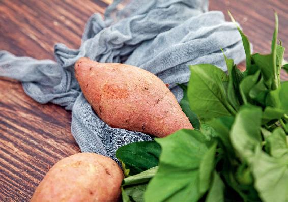
其实，我们平时吃的粮食的蛋白质含量也是不低的，最高能达到15%。大米的蛋白质含量是7%，比牛奶高很多，牛奶的蛋白质含量是3%。但为什么从医药学上来说，认为这些粮食类的蛋白质的营养价值不如动物蛋白呢？原因就是粮食类的蛋白质里面赖氨酸含量严重不足，这就影响了人体对粮食里面其他氨基酸的吸收和利用，即使其他氨基酸的含量再多，也会被排出体外。
红薯中含有丰富的赖氨酸，人体必需的八种氨基酸一样都不少。
吃素的人因为不能摄取到动物蛋白质，建议您除了吃豆腐之外，要多以红薯作为主食。跟吃其他的主食相比，小孩子多吃红薯，能获取更多的赖氨酸，对他的生长发育（长个头、长智力）都更有好处。
4.如何吃红薯能发挥最大功效？
其实，当我们把红薯当主食来吃的时候，再稍微讲究一点儿方法，效果就会好上加好。
假如您是为了调节便秘而吃红薯，可以吃烤红薯，并且连皮一起吃，这样不仅不烧心（胃灼热），缓解便秘的效果还会更好。
给小孩子吃红薯时，煮过红薯的水也让他一并喝掉，因为促进孩子生长发育的赖氨酸都溶解在了水里。
给糖尿病人吃红薯时，可以选择白皮白心的红薯，这样降糖效果会更好。
红薯的颜色不同，品种不同，烹调方法不同，吃法不同，都会产生不同的功效。
读者评论：真心好吃
梅 ：我每天蒸米饭时加上几片红薯，真心好吃。
红薯作为蔬菜来吃，在营养方面和其他蔬菜相比也毫不逊色，特别是在预防高血压方面。红薯属于高钾低钠类食物，而钾能够很好地对抗钠的升血压作用。
红薯跟其他蔬菜水果相比，它的含钾量相当丰富。如果您家里的老人血压高，不妨让他把红薯当主食来吃，或当蔬菜来吃。
如果您是一位年轻人，且喜欢运动，经常在健身房挥汗如雨，又或者经常跑步，大量出汗，这会使您的身体缺钾，严重时会对心脏造成伤害。缺钾是很多心脏病猝死的原因。
我建议您早餐用红薯代替主食，就可以及时地补充钾，对缓解身体疲劳很有帮助。
我有一位长期居住在国外的朋友，他回国后依然保持着在国外的生活习惯——每天早上出去跑步。跑步结束后，他会吃一片纤维素药片，喝一瓶果汁，他觉得这样的方式特别健康。
我就问他：“为什么不直接吃一个水果呢？这样纤维素有了，果汁的营养也有了，还更全面。”
他说：“吃水果太麻烦了，喝果汁多方便啊。”但他又怕只喝果汁摄取不到纤维素，所以又补充一片纤维素药片。
其实，果汁加纤维素药片不能完全替代水果，因为新鲜的水果含有很多活性成分，而且纤维素也不是像这位朋友理解的那样，就是一些渣渣呀、蔬菜的筋什么的。
有些男性嫌吃水果麻烦，或者压根儿不爱吃水果；有些女性，因为脾胃虚寒，不敢多吃水果；有些老年人，因为牙齿不好，不能多吃水果。
像这样的人，如果害怕缺乏纤维素怎么办呢？除了多吃蔬菜外，还可以多吃红薯。
红薯口感很细腻，根本感觉不到它有多少纤维，这就是红薯所含的膳食纤维的特点——非常细腻，组成结构还特别合理，能帮助人体吸收人造食品里的色素、铝、添加剂等有害成分。
红薯之所以能预防肠道疾病，就是因为它有这种功能，能阻止肠道吸收有害的毒素，还可以预防其他的肿瘤和癌症。
其实，红薯含有的抗癌成分不止一种，其中有一种重要的抗癌成分叫作DHEA，是科学家前些年才从红薯中发现的。
红薯不仅能对抗结肠癌，还能对抗乳腺癌，其中，DHEA就起到了非常重要的作用。
DHEA听起来很陌生，其实，它有一个更好听的名字，叫作激素之母。
因为它是人体合成多种激素的前体物质，就是说人体内的很多激素是通过DHEA来转化的。
更神奇的是，它可以向两个方向转化，既可以转化为雄性激素，又可以转化为雌性激素。
男性体内一般意义上的雄性激素，都是由DHEA转化而成的，女性体内这个转化的比例更高，可以说大部分的雌性激素都是由DHEA转化而成的，特别是更年期以后的女性，体内90%以上的雌性激素都是由DHEA转化的。
有些女性，觉得自己身体这儿不舒服，那儿也不舒服，减肥也减不下来，脸上又长斑，月经也不正常，情绪波动还很大，到医院检查，有时候会被医生说是内分泌失调。
什么是内分泌失调呢？其实就是身体内的激素有的分泌不足，有的分泌过度。内分泌失调并不分男女，男性也可能有这个问题。
人体内有些激素是不可以过度分泌的，如果过度分泌，就会引起各种毛病，导致人体衰老，甚至死亡。所以，科学家把一些激素称为死亡激素，而DHEA能对抗这些死亡激素，也就是说它有抗衰老的作用。
说到死亡激素，并不是它们不好，而是说它们的过度分泌会导致身体出现各种问题。
不要随便补充外源性的激素，如口服激素药，虽然会收到一时的效果，但就长期来说，不良反应可能更大，甚至会引发一些后遗症，得不偿失。
最安全的补充方式是通过食物摄取营养物质，让人体把这些营养物质转化成激素。
红薯中的DHEA、大豆中的大豆异黄酮，这些都是合成激素的前体物质，人体会根据需要，决定把这些营养物质转化成多少量的激素。您要做的，只是给身体提供充足的营养物质，其他的事情就交给身体自己来完成。
如果您想保持青春，对抗衰老，促进激素分泌，那就每天多吃一点红薯吧。
前面谈到了红薯中含有的DHEA对人体的一些好处，其实，DHEA对人的好处还有很多，归纳下来，一共有七大好处。
1.延缓衰老
人体内有些激素是不能过度分泌的，如果过度分泌会加速人体的衰老，而DHEA能对抗激素的过度分泌，延缓人体的衰老。
2.抗癌症
DHEA有一个特点，就是在癌症化疗的时候，它能对身体起到保护作用，同时又有助于疗效的发挥。
3.减肥
DHEA可以改善人体内脂肪的分布，让脂肪到该去的地方，而不是堆积在不该堆积的地方，所以瘦人也不用担心它会让您变得更瘦。
4.能增强人体内分泌系统的活性，调节人体的激素水平
对于人体某些激素的不足，它能够补充，而对于某些激素分泌过多，它能对抗。比如，它能对抗人体皮质醇水平的过高，对于治疗一些皮质疾病有很大的作用。
5.能恢复人体的免疫反应
如果由于衰老或者其他原因损伤了人体免疫功能，DHEA有恢复作用。
6.降血糖
DHEA能够改善人体的糖耐量，提高胰岛素水平，对于调节血糖很有帮助。红薯之所以是适合糖尿病人吃的主食，就是因为它里面含有包括DHEA、纤维素等在内的多种调节血糖的营养素。
7.预防骨质疏松症
有些老年朋友告诉我，因为年轻的时候经历了困难年代，天天顿顿吃红薯，好像把这辈子该吃的红薯都吃光了，现在不是那么乐意吃红薯了。
但是我想提醒您，如果您想预防骨质疏松症，还是可以考虑每天吃一些红薯。不同于以前，现在做红薯的时候有油，有调料，而且大家肚子里的油水也多了。如果变着花样吃红薯，红薯还是可以做得很美味的。
其实，不仅是老年人，很多人到中年就已经骨质疏松了，而很多小孩子也有缺钙的问题。
如果我们经常吃红薯，对于吸收钙，改善骨质代谢，提高骨密度水平，都有很好的帮助。
我们怎样吃红薯才能获取更多的DHEA呢？这里面有一个小窍门，就是红薯一定要带皮吃。
在红薯的不同部位里面，DHEA的含量很不一样，红薯肉所含的DHEA是红薯叶的3倍多，而红薯皮所含的DHEA又是红薯肉的8倍。
人年轻的时候，体内DHEA的含量还比较高，30岁以后就走下坡路了。到70岁的时候，DHEA的含量已经只有年轻时候的1/4了。而对更年期的女性来说，几乎已经没有什么DHEA了。所以，及时补充DHEA是延缓我们衰老的一项重要任务。
如果您在家自己做红薯，最好是把红薯洗得干干净净的，做好后连皮一起吃。
其实，把红薯洗干净并不难，先用刷子把上面大块的泥巴刷掉，再盛一盆清水，放一小把面粉进去，把红薯也放进去，来回搅动，让面粉溶解，再泡一泡，就可以把红薯洗干净了。
一些老读者可能很熟悉我以前教过的用面粉水清洗蔬菜瓜果的方法。面粉不仅能像洗涤灵一样起到表面活性剂的作用，去除污垢，而且还能在一定程度上去除农药残留。
事实上，红薯跟其他蔬菜相比，因它的果实在土壤中，病虫害要少得多，所以基本上是不打农药的。
植物果实的皮和肉是一种阴阳互补的关系。红薯也不例外。红薯肉属阳，是补的；红薯皮属阴，是泄的。
红薯肉补什么呢？
第一，它补脾胃，而红薯皮正好是帮助脾胃消化的。
第二，它补气，而红薯皮正好是通气的，所以带皮吃红薯肚子不会胀气。
第三，红薯肉是偏酸性的，而红薯皮是偏碱性的。有的人吃了红薯肉后会觉得烧心（胃灼热），这是刺激到胃酸的分泌了，如果带着皮吃就不会烧心了。
当然，如果您看到红薯皮上有黑斑，或者是褐色的斑点，就不能吃了。不仅不能吃皮，整个红薯都不能吃了，因为红薯发霉、变黑以后会产生毒素。
古人说:“人不可貌相。”红薯皮也是这样。
现在的人造食品虽然看起来很精美、很干净，其实，它里面暗含着各种对身体不利的添加剂、香精、色素。而红薯皮看起来脏脏的，丑丑的，但它含有对身体特别好的各种营养物质。我们在吃红薯的时候，却随随便便地把红薯皮给扔掉了，这不是把宝贝都给扔掉了吗？
天然的食物再怎么脏，也脏不过人造食品的添加剂。有时候我们就像捧着金碗在要饭，明明老天爷给了很好的养生宝贝，我们却把它弃之一旁。
读者评论：一直是带着皮吃红薯，吃得脸色都有了光亮
安静_tnf：我以前看过老师的书，所以一直是带皮吃红薯的。我最近换着各种做法给家里人吃，熬粥吃、蒸着吃、烤着吃、生着吃……连我公公的脸色都有了光亮。
红：以前吃红薯都把皮去掉了，吃完会呕气，现在连皮吃就没有这种现象了。我每天中午都会蒸红薯或烤红薯吃，现在真心喜欢上吃红薯了。
允斌解惑：吃红薯会反酸的朋友怎么办？
夏日晴空：吃红薯会反酸的朋友，如果是煮红薯糖水喝，可以加姜；如果是吃蒸红薯的话，可以带皮一起吃。
允斌：正解！
平时，我们所说的红薯只是一个俗称，细分一下，会有红肉的红薯，白肉的红薯，黄肉的红薯。只有紫色的，我们不把它叫红薯，而叫作紫薯。
其实，不管是什么颜色的红薯，严格地说，它们都叫作甘薯，就是甜的薯类。所以白肉的红薯，应该叫白肉甘薯；黄肉的红薯，叫黄肉甘薯；红肉的红薯，叫红肉甘薯；而紫薯，其实就是紫肉甘薯。
它们之所以有不同的颜色，是因为色素含量不一样。白皮白肉的红薯，几乎不含什么色素；黄肉的红薯含有类胡萝卜素；而紫薯含有花青素。
红薯颜色不同，其营养成分也不同，从而功效上也会有差别。
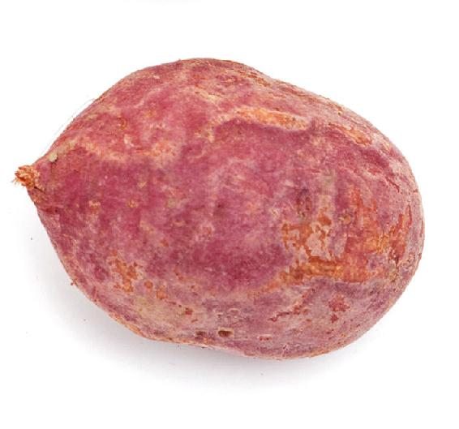
关于紫薯，很多人对它不够了解，有一些误会，甚至相信一些谣传，比如有段时间说紫薯是转基因而来的。其实，紫薯这个品种由来已久。
紫薯的紫色是天然生成的，自然界有野生的紫薯，以前也有人栽培，但是数量太稀少了，所以很多人小时候都没有见过紫薯。我手头有份资料——1984年出版的《全国甘薯品种资源目录》，里面收集、鉴定了全国红薯品种1094种，其中只有6种是紫薯，这是80年代以前的状况。
到了20世纪90年代，从日本引进了培育的紫薯品种，那时候紫薯还是比较贵的。从2004年开始，直到我国有了自己培育的紫薯品种，并且大力推广栽种，紫薯才走入了寻常百姓家。
另外一个谣言就是认为紫薯是染了色的。其实，紫薯的紫色属于天然的花青素，这种色素很容易溶于水中，所以我们把紫薯泡在水里，水就会变紫。如果把紫薯用来煮稀饭，稀饭也会是紫色，这都是正常的。
紫薯所含的花青素的染色能力是很强的，所以紫薯在食品工业中常被用来提取天然色素，现在我们喝的饮料，吃的点心、糖果中的紫色，很多都来源于从紫薯中提取的花青素。所以，很多紫薯并没有被送到餐桌上，而是被送到了工厂提取紫色色素。
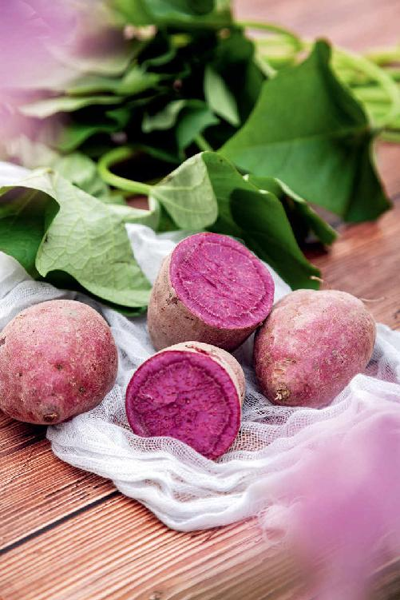
这种天然的色素经精炼提取以后，卖到欧洲，可以卖到一吨70万元，也就是1千克700块钱。
我曾经买过一小包紫薯色素回来研究，发现它的染色能力真的非常强。现在很多女性喜欢在家里做月饼、蛋糕等点心，您不妨买一点紫薯色素回来，装饰点心，既好看又天然，而且只要买10克就可以用很久。
有的人可能会想，紫薯色素就是花青素，那么用紫薯色素是不是就能获得花青素的营养呢？
当然不是。因为紫薯色素是经过提炼出来的，成分单一，而任何一种营养素，想要获得它的全部好处，最好是跟其他的营养成分一起吃，这样它们才能起到协同作用。
花青素也是如此，花青素如果没有红薯中其他活性成分的帮助，它也不能发挥最大作用。
花青素有很强的抗氧化作用，而紫薯的花青素的抗氧化能力，比维生素C还强。
很多家长都愿意给孩子吃蓝莓，因为蓝莓富含花青素，其实紫薯中的花青素，跟蓝莓的花青素的抗氧化效果是差不多的。
紫薯跟蓝莓一样，同样有保护视力的作用，给小孩、老年人吃紫薯，对他们的视力会有帮助。
最新研究发现，紫薯的花青素还可以增强大脑的学习能力和记忆力。另外，它对肠道也有一个特别的好处，就是可以增加肠道内的益生菌。
有些人喜欢补充益生菌，比如双歧杆菌、乳酸杆菌，但如果只是补充益生菌，而没有在肠道内创造出一个有利于它们生长的环境也无济于事。紫薯的花青素能给肠道创造一个好的环境，有利于益生菌的生长。
其实，紫薯的功效还不止这些，它还有更让人惊奇的功效。
有些朋友跟我说，紫薯真的没有红薯好吃，口感不太好，也不太甜，而且吃完之后还有点噎的感觉，有点不太好消化。
紫薯有不同的品种，那怎么来评价紫薯的营养品质呢？就是看它的颜色，颜色越深、越紫，花青素的含量就越高，营养品质也越好。但是有一点，颜色更深、更紫的紫薯吃起来口感会更差。这跟紫薯所含的花青素有关系。
还有一个原因，就是有些人吃紫薯的时候，头脑中想象的是红薯的口感，就会觉得紫薯没有那么甜，没有那么好吃。如果把紫薯拿来跟山药、土豆、芋头相比，您就会觉得它吃起来还是不错的。
当然，吃紫薯还得讲究做法，只要您做得好，口感差是可以弥补的。有人给我留言说：“我本来不爱吃红薯，听了您说的红薯营养价值高，富含DHEA，现在也爱吃红薯了。”
如果您以前因为紫薯的口感差而嫌弃过它，那么从现在起，希望您对紫薯能够喜欢起来。
之前讲过，甘薯跟粮食（大米、白面、玉米）相比，赖氨酸的含量比较高。
赖氨酸是人体必需氨基酸，而氨基酸又是构成蛋白质的基本单位，如果把食物中所含的蛋白质比作一个装满水的木桶，那么必需氨基酸就是木桶的木片，不管缺了哪一片木片都没法装水。
缺少赖氨酸是粮食类的一个短板，而甘薯正好含有丰富的赖氨酸，其中以紫薯为冠军，它所含的赖氨酸比白薯和红薯要高出3 ~ 6倍。
赖氨酸是一种人体必需氨基酸，它能促进小孩的生长发育，我建议妈妈们开动脑筋，多做出几种紫薯的花样来，让孩子们喜欢上吃紫薯。
紫薯含的微量元素也比红薯和白薯多，如铜、锌、钾，这些微量元素的含量都是普通红薯、白薯的几倍。
读者评论：每天吃紫薯，感觉便便顺畅了
陈怡均：这段时间每天早上吃紫薯。我的感受是便便顺畅了，小腹平坦了，皮肤变好了，人瘦了，太多好处了。之前看了不少有关紫薯的伪知识，一直以为紫薯是转基因食物，不敢吃。以后跟着允斌老师学养生，用的食材物美价廉纯天然，太棒啦。
允斌解惑：可以把紫薯放到银耳莲子羹里煮吗？
玉兔：可以把紫薯放到银耳莲子羹里煮吗？因为紫薯太干了，孩子吃起来有点噎。
允斌：可以。
紫薯的质地比较紧实，淀粉膨胀度和溶解度比其他薯类要低一些，而且它含有的营养物质比较多，所以紫薯相对来说比较难消化。
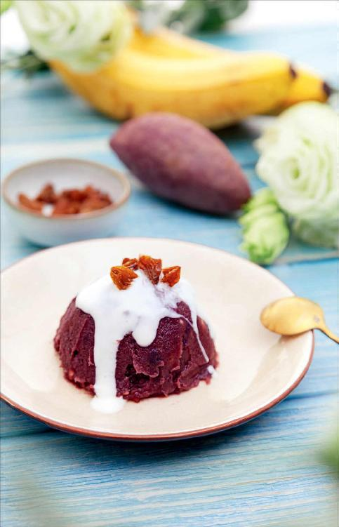
我们平常吃紫薯时，可以连皮一起吃，才比较容易消化，也不容易胀气，不会觉得胃里难受。
紫薯如果烤着吃或是蒸着吃，都有点太干了，煮着吃是可以的，但您一定要把煮紫薯的水也喝掉，因为花青素和赖氨酸都会溶解在水里。所以，不如用它来煮稀饭，连稀饭一起喝掉，这样就不会损失营养了。而且把紫薯跟其他食物一起混着吃，也比较好消化。
如果给小孩子吃，可以把紫薯做得更美味一些，您可以做紫薯馒头、紫薯花卷、紫薯饼、紫薯蛋糕，这些吃起来都很美味。
如果您没有时间做这些怎么办呢？我这有一款很简单的紫薯香蕉泥做法，您可以试一试。
紫薯因为其独特的营养，稍微影响了一点它的口感，其实还影响了它的产量。颜色越紫的紫薯，产量越低，当然也就越珍贵，口感差一点，其实真的无伤大雅。
紫薯香蕉泥
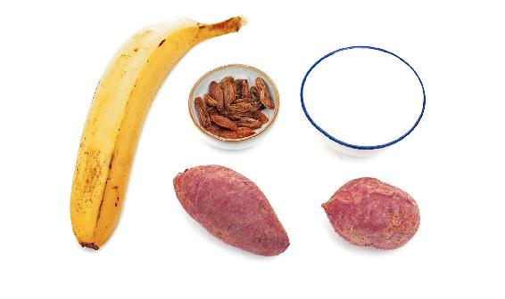
原料：紫薯、香蕉（1～2根）。
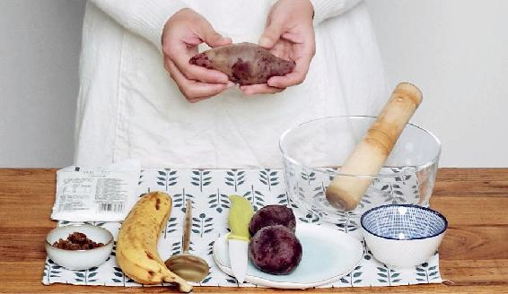
做法：
1.把紫薯蒸熟，不要煮，因为煮会让赖氨酸和花青素溶解到水里。
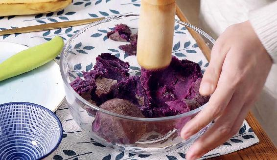
2.把蒸熟的紫薯放到一个瓷盆里，用擀面杖捣成泥。捣的过程会破坏紫薯淀粉的细胞壁，这样处理过的紫薯就比较容易消化了。
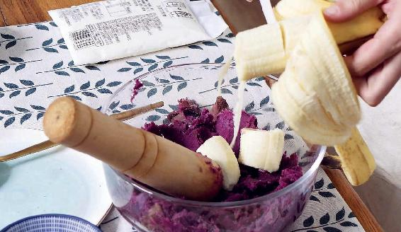
3.捣成泥之后，您再放1～2根香蕉进去，把它们捣烂。我们平时觉得紫薯的口感不太好，就是因为它比较干，比较沙，也不太甜，我们放香蕉进去，它就没那么干了，比较润滑，而且也增加了甜度。如果您想再软一点，还可以加一点点水或者牛奶进去。
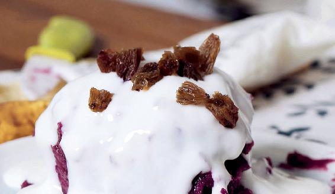
4.捣好之后，把它倒扣在盘子上，呈半圆形。您再给它装饰一下，上面浇一点酸奶，撒几粒果干，枸杞、葡萄干、樱桃干、蔓越莓干……都可以，又好看又好吃，相信小孩子会喜欢的。